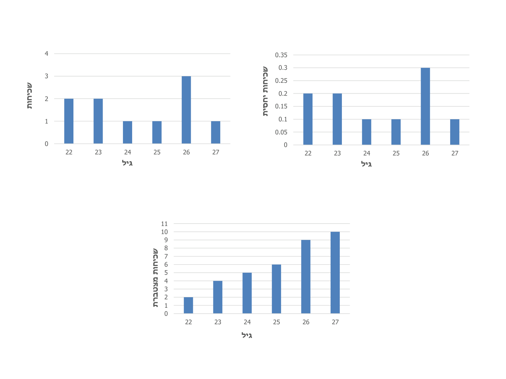

מבוא — משתנים, סולמות מדידה ומדגמים
⏱ זמן משוער: 40 דק'
0. האינטואיציה — במה הקורס הזה עוסק?
סטטיסטיקה היא תחום ידע שעוסק באיסוף, ניתוח והצגה של נתונים כמותיים. ההרצאה הראשונה פותחת את הקורס בהצהרת מבנה: נבחין בשלושה נושאים עיקריים — סטטיסטיקה תיאורית, הסתברות והסקה סטטיסטית. הנושא הראשון, סטטיסטיקה תיאורית, עוסק באיסוף נתונים, עריכתם בטבלאות, חישוב ערכים מייצגים, הצגה גרפית וקשר בין משתנים.
התרגול מוסיף את שני המושגים שכל השאר נבנה עליהם: אוכלוסייה — אוסף של פריטים (למשל אוכלוסיית התלמידים בכיתה), ומדגם — פלח של האוכלוסייה (למשל 4 סטודנטים מתוך כלל הכיתה, או רק הבנות). בין השניים נעים בשני כיוונים:
- דגימה — מהאוכלוסייה אל המדגם: בוחרים חלק שמייצג את השלם.
- הסקה — מהמדגם חזרה אל האוכלוסייה: לומדים מהחלק על השלם (זה כל החצי השני של הקורס).
ארגז הכלים של הסטטיסטיקה התיאורית, כפי שהתרגול מסכם אותו: טבלאות וגרפים, מדדים לנטייה מרכזית (ממוצע, חציון), מדדי מיקום יחסי (אחוזונים, ציוני תקן) ומדדי פיזור (שונות, טווח בין-רבעוני). במודול הזה נבנה את התשתית — משתנים, סולמות, מדגמים וטבלאות שכיחות — והמדדים עצמם מחכים במודול הבא.
מקור: lec01-descriptive-statistics.pdf (עמ' 1) · class01.pptx (עמ' 2–3)
1. המושג משתנה — כמותי/איכותני, בדיד/רציף
משתנה (Variable) הוא מושג הכולל את המכלול של כל הערכים או הצורות שתופעה יכולה לקבל. כל משתנה חייב לכלול לפחות 2 ערכים; אם הוא כולל בדיוק 2 ערכים — הוא קרוי משתנה דיכוטומי.
המשתנה יכול להיות אחד משני סוגים:
- כמותי — כולל ערכים מספריים בעלי משמעות: גובה, גיל, משקל.
- איכותני — מבטא תכונה: מצב משפחתי, שפת אם, מידת השכלה.
את המשתנים מסווגים לפי שלושה סיווגים (המוצגים בהרצאה כתרשים עץ עם שלושה ענפים) — והם סיווגים מקבילים: אותו משתנה מסווג בו-זמנית בכל אחד מהם.
- בדיד / רציף
- לפי רמת מדידה (סולמות המדידה — סעיף 2)
- תלוי / בלתי תלוי — כאשר המשתנים נמדדים במערכת של לפחות 2 משתנים (סעיף 3)
1.1 בדיד מול רציף
משתנה בדיד הוא משתנה כמותי או איכותני היכול לקבל רק ערכים מסוימים בתוך תחום — למשל: שנת לידה, מספר ילדים במשפחה, מספר נעליים, מצב משפחתי, רמת השכלה. משתנה רציף יכול לקבל כל ערך בתוך תחום — גיל, משקל, גובה. מבחינה מתמטית: משתנה שבין כל 2 ערכים שלו יש תמיד ערך שלישי.
מקור: lec01-descriptive-statistics.pdf (עמ' 1)
2. ארבעת סולמות המדידה
הסיווג השני הוא סיווג לפי רמת מדידה. סולם המדידה נקבע לפי רמת המדידה המתאימה שאנו מעוניינים בה, וארבעת הסולמות מסודרים בהיררכיה — כל סולם יודע לעשות את כל מה שקודמיו יודעים, ועוד משהו:
2.1 סולם שמי (נומינלי)
הסולם השמי הוא הסולם הנמוך ביותר, המשמש לצרכי זיהוי בלבד: מצב משפחתי, שפת אם, מגדר. אין בו היררכיה, אין מרווח ואין יחס.
2.2 סולם דירוגי (אורדינלי)
הסולם הדירוגי משמש לצרכי זיהוי וגם מצביע על היררכיה: קצין, נגד, חייל. ניתן לייצג את הערכים במספרים — למשל קצין 10, נגד 5, חייל 3 (או להפך) — אך המספרים מציינים דירוג בלבד, ללא מרווח קבוע ביניהם, ולכן אין משמעות למרווח או לממוצע.
2.3 סולם רווחי (מרווחים)
הסולם הרווחי משמש לזיהוי, היררכיה וגם מציין מרווח קבוע בין דרגות הסולם — אבל לא יחס. הדוגמה מההרצאה: קביעת טיב מוצר על ידי תשובות בסקר צרכנים — מצוין-5, טוב-4, סביר-3, גרוע-2, גרוע מאוד-1. כאן המרווחים קבועים ולכן יש משמעות לממוצע — למשל ממוצע 4.5 יצביע על טיב המוצר. אבל אין משמעות ליחס: לא ניתן לומר שטוב הוא כפול מגרוע.
2.4 סולם יחסי
הסולם היחסי הוא הסולם המשוכלל ביותר: יש בו משמעות לזיהוי, היררכיה, מרווח קבוע וגם ליחס. למשל המשתנה גיל — גיל 60 הוא כפול מגיל 30. התנאי ההכרחי: נקודת אפס אמיתית.
2.5 טבלת ההכרעה — איזה סולם מול איזו יכולת
| סולם | זיהוי | היררכיה | מרווח קבוע | יחס | דוגמה מההרצאה | ממוצע? |
|---|---|---|---|---|---|---|
| שמי | ✓ | — | — | — | מצב משפחתי, שפת אם, מגדר | אין משמעות |
| דירוגי | ✓ | ✓ | — | — | קצין, נגד, חייל | אין משמעות |
| רווחי | ✓ | ✓ | ✓ | — | סקר טיב מוצר 1–5 | יש משמעות (אך אין יחס) |
| יחסי | ✓ | ✓ | ✓ | ✓ | גיל (60 כפול מ-30) | יש משמעות מלאה |
מקור: lec01-descriptive-statistics.pdf (עמ' 2)
3. משתנה תלוי ובלתי תלוי — מערכת משתנים
הסיווג השלישי מתייחס למערכת של כמה משתנים — לפחות שניים. אחד המשתנים במערכת הוא המשתנה התלוי והאחרים הם בלתי תלויים. המשתנה התלוי מושפע מן המשתנים הבלתי תלויים, או מוסבר על ידיהם — כלומר הוא המשתנה הסביל, והבלתי תלויים הם הפעילים.
הדוגמה מההרצאה: המערכת רווח, עלות, פדיון. הרווח הוא המשתנה התלוי, בהיותו מושפע מהעלות ומהפדיון. בין המשתנה התלוי לבלתי תלויים קיים קשר:
- קשר חיובי — שני המשתנים באותה מגמה (כאשר אחד גדל גם השני גדל), כמו רווח ופדיון.
- קשר שלילי — שני המשתנים במגמות מנוגדות (כאשר אחד גדל השני קטן), כמו רווח לעומת עלות.
את הקשר בין המשתנה התלוי לבלתי תלוי ניתן לראות בשלוש דרכים:
- טבלת נתונים (נתונים מדודים)
- תיאור גרפי (קו או עקומה)
- תיאור מתמטי של קשר פונקציונלי בין המשתנים — מתקבל על ידי פעולה הנקראת רגרסיה (Regression), שמחכה לנו ביחידה רגרסיה ומיתאם.
מקור: lec01-descriptive-statistics.pdf (עמ' 3)
4. אוכלוסיה, מדגם וסוגי דגימה
את המשתנים השונים בודקים על מכלול של פרטים (בני אדם) או פריטים (מוצרים). המכלול של כל הפרטים או הפריטים הרלוונטיים לנושא הנבדק מוגדר אוכלוסיה (Population).
כדי ללמוד על האוכלוסיה באופן מדויק יש לדעת את ערכי המשתנה של כל פרט או פריט — אלא שבדיקה של כל האוכלוסיה כרוכה בשלוש בעיות:
- עלות — בדיקת כולם יקרה.
- זמן — וזמן קשור גם בעלויות. אלמנט הזמן חשוב במיוחד: לעיתים יש שינויים באוכלוסיה תוך כדי הבדיקה (הולדה, תמותה), או שהתוצאות נדרשות תוך זמן קצר — שאחרת אין בהן צורך.
- הרס — לעיתים הבדיקה פוגעת בפריט או בפרט הנבדק: בדיקת איכות של גפרורים משמידה אותם, ובדיקת השפעת תרופה חדשה נעשית על חולים.
בשל בעיות עלות, זמן והרס מסתפקים בבדיקת חלק מהאוכלוסיה שמייצג את התכונה בה — פעולה הנקראת מדגם (Sample). בעיקרון המדגם צריך להיות אקראי (הגרלה, תוכנת מספרים אקראיים) — כלומר לתת סיכוי שווה לכל פרט או פריט לעלות במדגם. ישנם כמה סוגי מדגמים המותאמים למצבים שונים, והנושא יילמד מאוחר יותר: מדגם פשוט, מדגם שכבות, מדגם אשכולות.
🎓 הרחבה — לא נדרש למבחן: המונח מיפקד
בדיקה של האוכלוסיה כולה נקראת בספרות הסטטיסטית מיפקד (Census) — כמו מיפקד האוכלוסין שעורכת הלשכה המרכזית לסטטיסטיקה. ההרצאה מתארת את הרעיון ("לדעת את ערכי המשתנה של כל פרט") בלי להשתמש במונח עצמו, וכל הנימוקים נגדו — עלות, זמן והרס — הם בדיוק הסיבות שבגללן עוברים למדגם.
4.1 ומה עושים עם הנתונים? — מאפייני אוכלוסיה
לאחר איסוף הנתונים וריכוזם בטבלאות, מעוניינים לתאר את האוכלוסיה או המדגם באמצעות מספר קטן של מאפיינים. ההרצאה מציינת 2 מאפיינים בסיסיים:
- מודד ערך מרכזי המייצג את התכונה באוכלוסיה — למשל ממוצע, חציון, שכיח.
- מודד פיזור המצביע על מידת ההומוגניות — למשל טווח, סטיית תקן.
שני הסוגים האלה הם בדיוק הנושא של המודול הבא — מודדי מרכז, אחוזונים ומודדי פיזור.
מקור: lec01-descriptive-statistics.pdf (עמ' 4)
5. טבלאות שכיחות וגרפי עמודות (מתרגול 1)
הכלי הראשון של הסטטיסטיקה התיאורית הוא טבלת שכיחות: מסדרים את ערכי המשתנה, וסופרים לכל ערך כמה פעמים הוא מופיע. שאלה 1 בתרגול מגדירה בדיוק אילו עמודות טבלה כזו צריכה לכלול, על נתוני הגילאים של 10 סטודנטים — 22, 22, 23, 23, 24, 25, 26, 26, 26, 27:
| עמודה | איך מחשבים | דוגמה (גיל 26) |
|---|---|---|
| שכיחות f | כמה פעמים מופיע הערך בנתונים | 3 (שלושה סטודנטים בני 26) |
| שכיחות מצטברת | סכום השכיחויות מהערך הנמוך ביותר עד הערך הנוכחי ועד בכלל | 2+2+1+1+3 = 9 |
| שכיחות יחסית | השכיחות חלקי מספר התצפיות n | 3/10 = 0.3 (30%) |
| שכיחות יחסית מצטברת | השכיחות המצטברת חלקי n | 9/10 = 0.9 (90%) |
את הטבלה מציגים גם גרפית — גרף עמודות לכל עמודה. בשקף הפתרון של התרגול מופיעים שלושה גרפים על אותם נתונים: גרף שכיחות (עמודות בגבהים 2, 2, 1, 1, 3, 1), גרף שכיחות יחסית (אותה צורה בדיוק, בסקאלה של 0 עד 0.35) וגרף שכיחות מצטברת — שתמיד מטפס ואינו יורד, עד שהעמודה האחרונה מגיעה ל-n:

מקור: class01.pptx (עמ' 4–5)
6. מלכודות למבחן
7. תרגילי הקורס
תרגיל סיווג משתנים (הרצאה 1, עמ' 2)
"סווג את המשתנים הבאים לפי בדיד/רציף ולפי סולם מדידה: גובה, מספר מבחנים במהלך הסמסטר, שנת לידה, גיל, ארץ לידה, רמת השכלה (תיכונית, תואר I, תואר שני, דוקטורט), רמת השכלה (מספר שנות לימוד), תפקיד בבית ספר (מנהל, רכז שכבה, מורה)."
| משתנה | כמותי / איכותני | בדיד / רציף | סולם מדידה |
|---|---|---|---|
| גובה | כמותי | רציף | יחסי |
| מספר מבחנים במהלך הסמסטר | כמותי | בדיד | יחסי |
| שנת לידה | כמותי | בדיד | רווחי |
| גיל | כמותי | רציף | יחסי |
| ארץ לידה | איכותני | בדיד | שמי |
| רמת השכלה (תיכונית, תואר I, תואר שני, דוקטורט) | איכותני | בדיד | דירוגי |
| רמת השכלה (מספר שנות לימוד) | כמותי | בדיד | יחסי |
| תפקיד בבית ספר (מנהל, רכז שכבה, מורה) | איכותני | בדיד | דירוגי |
נימוקים לשורות המלכודת:
- שנת לידה — בדיד (דוגמה מפורשת מההרצאה למשתנה בדיד) ובסולם רווחי: המרווח בין שנים קבוע, אבל אין נקודת אפס אמיתית (ספירת השנים היא מוסכמה) — ולכן אין משמעות ליחס: שנת 2000 אינה "כפולה" משנת 1000.
- גיל — לעומת זאת דווקא יחסי: יש אפס אמיתי (רגע הלידה), וגיל 60 כפול מגיל 30, כמו בהרצאה. וגיל הוא רציף — דוגמה מפורשת מההרצאה.
- שתי גרסאות רמת ההשכלה — אותה תופעה, שני סולמות: ברשימת תארים יש היררכיה בלי מרווח קבוע (דירוגי); במספר שנות לימוד יש אפס אמיתי ומרווחים קבועים (יחסי). זו בדיוק הנקודה שסולם המדידה נקבע לפי רמת המדידה שאנו מעוניינים בה.
- תפקיד בבית ספר — מנהל, רכז שכבה, מורה: זיהוי + היררכיה ארגונית ללא מרווח קבוע — דירוגי, בדיוק כמו קצין/נגד/חייל.
פתרון שנכתב לאתר; במקור לא ניתן פתרון בכתב היד.
תרגיל מערכת הגבהים (הרצאה 1, עמ' 3)
"נתונה המערכת: גובה האב, גובה הבן, גובה האם, גיל הבן. רשום עבור כל אחד מהמשתנים אם הוא בדיד/רציף, מה סולם המדידה שלו, מי המשתנה התלוי במערכת ומה הקשר בין המשתנה התלוי לכל משתנה בלתי תלוי."
| משתנה | בדיד / רציף | סולם מדידה | תפקיד במערכת |
|---|---|---|---|
| גובה האב | רציף | יחסי | בלתי תלוי |
| גובה האם | רציף | יחסי | בלתי תלוי |
| גיל הבן | רציף | יחסי | בלתי תלוי |
| גובה הבן | רציף | יחסי | תלוי |
- המשתנה התלוי הוא גובה הבן — הוא המשתנה הסביל, המושפע (מוסבר) על ידי גובה האב, גובה האם וגיל הבן; שלושת האחרים הם הפעילים.
- הקשר עם גובה האב — חיובי: ככל שהאב גבוה יותר, צפוי גם הבן להיות גבוה יותר (אותה מגמה).
- הקשר עם גובה האם — חיובי, מאותו נימוק.
- הקשר עם גיל הבן — חיובי: ככל שהבן מתבגר הוא גבוה יותר (עד סיום הגדילה — בתחום הגילאים שבו הבן עדיין גדל).
פתרון שנכתב לאתר; במקור לא ניתן פתרון בכתב היד.
שאלה 1 (תרגול 1, עמ' 4–5)
"להלן נתוני הגילאים של 10 סטודנטים. בנה טבלת שכיחות שתכלול עבור כל גיל: שכיחות, שכיחות מצטברת, שכיחות יחסית ושכיחות יחסית מצטברת בשברים ובאחוזים
22, 22, 23, 23, 24, 25, 26, 26, 26, 27"
| גיל | שכיחות | שכיחות מצטברת | שכיחות יחסית (שבר) | שכיחות יחסית (%) | יחסית מצטברת (שבר) | יחסית מצטברת (%) |
|---|---|---|---|---|---|---|
| 22 | 2 | 2 | 0.2 | 20% | 0.2 | 20% |
| 23 | 2 | 4 | 0.2 | 20% | 0.4 | 40% |
| 24 | 1 | 5 | 0.1 | 10% | 0.5 | 50% |
| 25 | 1 | 6 | 0.1 | 10% | 0.6 | 60% |
| 26 | 3 | 9 | 0.3 | 30% | 0.9 | 90% |
| 27 | 1 | 10 | 0.1 | 10% | 1.0 | 100% |
| סה"כ | 10 | — | 1.0 | 100% | — | — |
- ביקורת: סכום השכיחויות 10 = n ✓; המצטברת האחרונה 10 ✓; היחסית המצטברת האחרונה 1.0 (100%) ✓.
- הגרפים בסעיף 5 למעלה הם ההצגה הגרפית הרשמית של שלוש מעמודות הטבלה: שכיחות, שכיחות יחסית ושכיחות מצטברת.
ערכי הטבלה שוחזרו במדויק מגרפי הפתרון שבשקף 5 של התרגול (הטבלה עצמה אינה מודפסת במצגת); עמודות השכיחות היחסית המצטברת אינן מוצגות בגרפים והושלמו חישובית לאתר.
8. בדיקה עצמית
בסקר טיב מוצר עונים הצרכנים: מצוין-5, טוב-4, סביר-3, גרוע-2, גרוע מאוד-1, ומחושב ממוצע 4.5. מהו סולם המדידה, ומדוע יש כאן משמעות לממוצע?
משתנה שכולל בדיוק שני ערכים (למשל תשובת כן/לא) — כיצד ההרצאה מכנה אותו?
ערך כספי נמדד בפועל ביחידות של אגורה (או סנט). כיצד מסווגת ההרצאה משתנה כזה?
מה התנאי ההכרחי כדי שסולם ייחשב יחסי — הסולם שבו מותר לומר שגיל 60 כפול מגיל 30?
מדוע, לפי ההרצאה, מסתפקים בדרך כלל במדגם במקום לבדוק את כל האוכלוסיה?
מה העיקרון שמדגם צריך לקיים, ואילו סוגי מדגמים מוזכרים בהרצאה?
בנתוני הגילאים מתרגול 1 (עשרה סטודנטים: 22, 22, 23, 23, 24, 25, 26, 26, 26, 27) — מהי השכיחות היחסית המצטברת עד גיל 24 ועד בכלל?
במערכת המשתנים רווח, עלות ופדיון — מיהו המשתנה התלוי, ומהו סוג הקשר שלו עם העלות?
סיימתם את הפרק? סמנו אותו כהושלם: